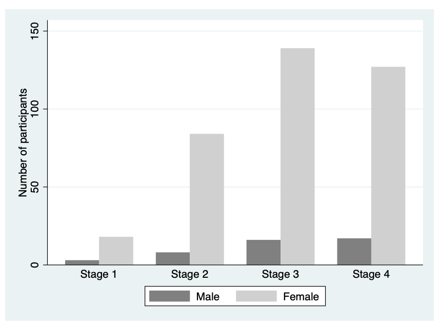

Sex | Frequency | Relative frequency (%) |
|---|---|---|
Male | 44 | 10.5 |
Female | 374 | 89.5 |
Learning objectives
By the end of this module you will be able to:
- Describe the concept of probability;
- Describe the characteristics of a binomial distribution and a Normal distribution;
- Compute probabilities from a binomial distribution using statistical software;
- Compute probabilities from a Normal distribution using statistical software;
- Decide when to use parametric or non-parametric statistical methods;
- Briefly outline other types of distributions.
Optional readings
Kirkwood and Sterne (2001); Chapters 5, 14 and 15. [UNSW Library Link]
Bland (2015); Chapters 6 and 7. [UNSW Library Link]
2.1 Introduction
In Module 1, we looked at how to summarise data numerically and graphically. In this module, we will introduce the concept of probability which underpins the theoretical basis of statistics, and then introduce the concept of probability distributions. We will look at the binomial distribution, and then look at the most important distribution in statistics: the Normal distribution. Finally, we introduce some other probability distributions commonly used in biostatistics.
2.1.1 Summarising a single categorical variable numerically
Categorical data are best summarised using a frequency table, where each category is summarised by its frequency: the count of the number of individuals in each category. The relative frequency (the frequency expressed as a proportion or percentage of the total frequency) is usually included give further insight.
It is sometimes useful to present the cumulative relative frequency, which shows the relative frequency of individuals in a certain category or below (for example, Table 2.2).
Stage * | Frequency | Relative frequency (%) | Cumulative relative frequency (%) |
|---|---|---|---|
1 | 21 | 5.1 | 5.097087 |
2 | 92 | 22.3 | 27.427184 |
3 | 155 | 37.6 | 65.048544 |
4 | 144 | 35.0 | 100.000000 |
* Disease stage was missing for 6 participants | |||
From Table 2.2, we can see that 65.0% of participants had Stage 3 disease or lower.
2.1.2 Summarising a single categorical variable graphically
A categorical variable is best summarised graphically using a bar chart. For example, we can present the distribution of Stage of Disease graphically using a bar graph (Figure 2.1). Bar graphs, which are suitable for plotting discrete or categorical variables, are defined by the fact that the bars do not touch.

Pie charts can be an alternative way to summarise a categorical variable graphically, however their use is not recommended for the following reasons:
- Not ideal when there are many categories to compare
- The use of percentages is not appropriate when the sample size is small
- Can be misleading by using different size pies, different rotations and different colours to draw attention to specific groups
- 3D and exploding bar charts further distort the effect of perspective and may confuse the reader
Pie charts will not be discussed further in this course.
2.1.3 Summarising two categorical variables numerically
So far, we have discussed one-way frequency tables, that is, tables that summarise one variable. We can summarise more than two categorical variables in a table – called a cross tabulation, or a two-way (summarising two variables) table.
Using our PBC data, we can summarise the two categorical variables: sex and stage of disease. The two-way table of frequencies is shown in Table 2.3.
Sex | Stage of disease * | ||||
|---|---|---|---|---|---|
1 | 2 | 3 | 4 | Total | |
Male | 3 | 8 | 16 | 17 | 44 |
Female | 18 | 84 | 139 | 127 | 368 |
Total | 21 | 92 | 155 | 144 | 412 |
* Disease stage was missing for 6 participants | |||||
We can add percentages to two-way tables as either column or row percents. Using Table 2.3 as an example, column percents represent the relative frequencies of sex within each stage (Table 2.4).
Sex | Stage of disease * | |||||
|---|---|---|---|---|---|---|
1 | 2 | 3 | 4 | Total | ||
Male | Count | 3 | 8 | 16 | 17 | 44 |
Column % | 14.3% | 8.7% | 10.3% | 11.8% | ||
Female | Count | 18 | 84 | 139 | 127 | 368 |
Column % | 85.7% | 91.3% | 89.7% | 88.2% | ||
Total | Count | 21 | 92 | 155 | 144 | 412 |
* Disease stage was missing for 6 participants | ||||||
Conversely, row percents represent the relative frequencies of stage within each sex (Table 2.5).
Sex | Stage of disease * | |||||
|---|---|---|---|---|---|---|
1 | 2 | 3 | 4 | Total | ||
Male | Count | 3 | 8 | 16 | 17 | 44 |
Row pct | 6.8% | 18.2% | 36.4% | 38.6% | ||
Female | Count | 18 | 84 | 139 | 127 | 368 |
Row pct | 4.9% | 22.8% | 37.8% | 34.5% | ||
Total | Count | 21 | 92 | 155 | 144 | 412 |
*Stage was missing for 6 participants | ||||||
2.1.3.1 Tables containing more than two variables
It is possible to construct multi-way tables that summarise more than two categorical variables in a single table. However, tables can become complex when more than two variables are incorporated, and you may need to present the information as two tables or incorporate additional rows and columns.
In ?fig-1-2, characteristics of the sample of prisoners from the NPHDC were presented. This table contains information about sex, age group and Indigenous status from different groups of prisoners; prison entrants, discharges, and prisoners in custody. This type of condensed information is often found in reports and journal articles giving demographic information, by different groups considered in the study.
We might also consider a table containing further pieces of information. The table presented in Figure 2.2 (from the health of Australia’s prisoners 2015 report) compares prison entrants and the general community by three variables: age group, Indigenous status, and highest level of completed education.
Can you see any issues with the presentation of this table?

Source: Australian Institute of Health and Welfare 2015. The health of Australia’s prisoners 2015. Cat. no. PHE 207. Canberra: AIHW.
Some issues in this table:
- The title of the table does not contain full information about the variables in the table;
- It is unclear how the percentages were calculated (which groupings added to 100%);
- The ages are not labelled as such, thus without reading the text in report it is unclear that these are age groupings.
2.1.4 Summarising two categorical variables graphically
Information from more than one variable can be presented as clustered or multiple bar chart (bars side-by-side) (Figure 2.3). This type of graph is useful when examining changes in the categories separately, but also comparing the grouping variable between the main bar variable. Here we can see that Stage 3 and Stage 4 disease is the most common for both males and females, but there are many more females within each stage of disease.

An alternative bar graph is a stacked or composite bar graph, which retains the overall height for each category, but differentiates the bars by another variable (Figure 2.4).

Finally, a stacked relative bar chart (Figure 2.5) displays the proportion of grouping variable for each bar, where each overall bar represents 100%. These graphs allow the reader to compare the proportions between categories. We can easily see from Figure 2.5 that the distribution of sex is similar across each stage of disease.

2.2 Presentation guidelines
2.2.1 Guidelines for presenting summary statistics
When reporting summary statistics, it is important not to present results with too many decimal places. Doing so implies that your data have a higher level of precision than they do. For example, presenting a mean blood pressure of 100.2487 mmHg implies that blood pressure can be measured accurately to at least three decimal places.
There are a number of guidelines that have been written to help in the presentation of numerical data. Many of these guidelines are based on the number of decimal places, while others are based on the number of significant figures. Briefly, the number of significant figures are “the number of digits from the first non-zero digit to the last meaningful digit, irrespective of the position of the decimal point. Thus, 1.002, 10.02, 100200 (if this number is expressed to the nearest 100) all have four significant digits.” Armitage, Berry, and Matthews (2013)
A summary of these guidelines that will be used in this course appear in Table 2.6.
Summary statistic | Guideline (reference) |
|---|---|
Mean | It is usually appropriate to quote the mean to one extra decimal place compared with the raw data. (Altman) |
Median, Interquartile range, Range | As medians, interquartile ranges and ranges are based on individual data points, these values should be presented with the same precision as the original data. |
Percentage | Percentages do not need to be given with more than one decimal place at most. When the sample size is less than 100, no decimal places should be given. (Altman) |
Probability | It is acceptable to present probabilities to 2 or 3 decimal places. If the probability is presented as a percentage, present the percentage with 0 or 1 decimal place. |
Standard deviation | The standard deviation should usually be given to the same accuracy as the mean, or with one extra decimal place. (Altman) |
Standard error | As per standard deviation |
Confidence interval | Use the same rule as for the corresponding effect size (be it mean, percentage, mean difference, regression coefficient, correlation coefficient or risk ratio) (Cole) |
Test statistic | Test statistics should not be presented with more than two decimal places. |
P-value | Report P-values to a single significant figure unless the P-value is close to 0.05 (say, 0.01 to 0.2), in which case, report two significant figures. Do not report `not significant` for P-values of 0.05 or higher. Very low P-values can be reported as P < 0.001 or P < 0.0001. A P-value can indeed be 1, although some investigators prefer to report this as >0.9. (Based on Assel) |
Difference in means | As for the estimated means |
Difference in proportions | As for the estimated proportions |
Odds ratio / Relative risk | Hazard and odds ratios are normally reported to two decimal places, although this can be avoided for high odds ratios (Assel) |
Correlation coefficient | One or two decimal places, or more when very close to ±1 (Cole) |
Regression coefficient | Use one more significant figure than the underlying data (adapted from Cole) |
2.2.2 Table presentation guidelines
Consider the following guidelines for the appropriate presentation of tables in scientific journals and reports (Woodward, 2013).
- Each table (and figure) should be self-explanatory, i.e. the reader should be able to understand it without reference to the text in the body of the report.
- This can be achieved by using complete, meaningful labels for the rows and columns and giving a complete, meaningful title.
- Footnotes can be used to enhance the explanation.
- Units of the variables (and if needed, method of calculation or derivation) should be given and missing records should be noted (e.g. in a footnote).
- A table should be visually uncluttered.
- Avoid use of vertical lines.
- Horizontal lines should not be used in every single row, but they can be used to group parts of the table.
- Sensible use of white space also helps enormously; use equal spacing except where large spaces are left to separate distinct parts of the table.
- Different typefaces (or fonts) may be used to provide discrimination, e.g. use of bold type and/or italics.
- The rows and columns of each table should be arranged in a natural order to help interpretation. For instance, when rows are ordered by the size of the numbers they contain for a nominal variable, it is immediately obvious where relatively big and small contributions come from.
- Tables should have a consistent appearance throughout the report so that the paper is easy to follow (and also for an aesthetic appearance). Conventions for labelling and ordering should be the same (for both tables as well as figures) for ease of comparison of different tables (and figures).
- Consider if there is a particular table orientation that makes a table easier to read.
Given the different possible formats of tables and their complexity, some further guidelines are given in the following excellent references:
2.2.3 Graphical presentation guidelines
Consider the following guidelines for the appropriate presentation of graphs in scientific journals and reports (Woodward, 2013).
- Figures should be self-explanatory and have consistent appearance through the report.
- A title should give complete information. Note that figure titles are usually placed below the figure, whereas for tables titles are given above the table.
- Axes should be labelled appropriately
- Units of the variables should be given in the labelling of the axes. Use footnotes to indicate any calculation or derivation of variables and to indicate missing values
- If the Y-axis has a natural origin, it should be included, or emphasised if it is not included.
- If graphs are being compared, the Y-axis should be the same across the graphs to enable fair comparison
- Columns of bar charts should be separated by a space
- Three dimensional graphs should be avoided unless the third dimension adds additional information
Sources:
Altman (1990)
Cole (2015)
Assel et al. (2019)
2.3 Probability
Probability is defined as:
the chance of an event occurring, where an event is the result of an observation or experiment, or the description of some potential outcome.
Probabilities range from 0 (where the event will never occur) to 1 (where the event will always occur). For example, tossing a coin is an experiment; one event is the coin landing with head up, while the other event is the coin landing tails up. The set of all possible outcomes in an experiment is called the sample space. For example, by tossing a coin you can get either a head or a tail (called mutually exclusive events); and by rolling a die you can get any of the six sides. Thus, for a die the sampling space is: S = {1, 2, 3, 4, 5, 6}
With a fair (unbiased) die, the probability of each outcome occurring is 1/6 and its probability distribution is simply a probability of 1/6 for each of the six numbers on a die.
2.3.1 Additive law of probability
How do we work out the probability that one roll of a die will turn out to be a 3 or a 6? To do that, we first need to work out whether the events (3 or 6 on the roll of a die) are mutually exclusive. Events are mutually exclusive if they are events which cannot occur at the same time. For example, rolling a die once and getting a 3 and 6 are mutually exclusive events (you can roll one or the other but not both in a single roll).
To obtain the probability of one or the other of two mutually exclusive events occurring, the sum of the probabilities of each is taken. For example, the probability of the roll of a die being a 3 or a 6 is the sum of the probability of the die being 3 (i.e. 1/6) and the probability of the die being 6 (also 1/6). With a fair die:
Probability of a die roll being 3 or 6 = \(1/6 + 1/6 = 1/3\)
Another way of putting it is:
P(die roll =3 or die roll =6) = P(die roll=3) + P(die roll=6) = \(1/6 + 1/6 = 1/3\)
Example: Additive law for mutually exclusive events
Consider that blood type can be organised into the ABO system (blood types A, B, AB or O) An individual may only have one blood type.
Using the information from https://www.donateblood.com.au/learn/about-blood let’s consider the ABO blood type system. The frequency distribution (prevalence) of the ABO blood type system in the population represents the probability of each of the outcomes. If we consider all possible blood type outcomes, then the total of the probabilities will sum to 1 (100%).
Blood Type | % of population | Probability |
|---|---|---|
A | 38% | 0.38 |
B | 10% | 0.10 |
AB | 3% | 0.03 |
O | 49% | 0.49 |
Total | 100% | 1.00 |
In this example we consider: What is the probability that an individual will have either blood group O or A?
Since blood type is mutually exclusive, the probability that either one or the other occurs is the sum of the individual probabilities. These are mutually exclusive events so we can say P(O or A) = P(O) + P(A)
Thus, the answer is: P(Blood type O) + P(Blood type A) = 0.49 + 0.38 = 0.87
2.3.2 Multiplicative law of probability
The additive law of probability lets us consider the probability of different outcomes in a single experiment. The multiplicative law lets us consider the probability of multiple events occurring in a particular order. For example: if I roll a die twice, what is the probability of rolling a 3 and then a 6?
These events are independent: the probability of rolling a 6 on the second roll is not affected by the first roll.
The multiplicative law of probability states:
If A and B are independent, then P(A and B) = P(A) \(\times\) P(B).
So, the probability of rolling a 3 and then a 6 is: P(3 and 6) = \(1/6 \times 1/6 = 1/36\).
Note here that the order matters – we are considering the probability of rolling a 3 and then a 6, not the probability of rolling a 6 and then a 3.
2.4 Probability distributions
A probability distribution is a table or a function that provides the probabilities of all possible outcomes for a random event.
For example, the probability distribution for a single coin toss is straightforward: the probability of obtaining a head is 0.5, and the probability of obtaining a tail is 0.5, and this can be summarised in Table 2.8.
Coin face | Probability |
|---|---|
Heads | 0.5 |
Tails | 0.5 |
Similarly, the probability distribution for a single roll of a die is straightforward: each face has a probability of 1/6 (Table 2.9).
Face of a die | Probability |
|---|---|
1 | 1/6 |
2 | 1/6 |
3 | 1/6 |
4 | 1/6 |
5 | 1/6 |
6 | 1/6 |
Things become more complicated when we consider multiple coin-tosses, or rolls of a die. These series of events can be summarised by considering the number of times a certain outcome is observed. For example, the probability of obtaining three heads from five coin tosses.
Probability distributions can be used in two main ways:
- To calculate the probability of an event occurring. This seems trivial for the coin-toss and die-roll examples above. However, we can consider more complex events, as below.
- To understand the behaviour of a sample statistic. We will see in Modules 3 and 4 that we can assume the mean of a sample follows a probability distribution. We can obtain useful information about the sample mean by using properties of the probability distribution.
2.5 Discrete random variables and their probability distributions
Rather than thinking of random events, we often use the term random variable to describe a quantity that can have different values determined by chance.
A discrete random variable is a random variable that can take on only countable values (that is, non-negative whole numbers). An example of a discrete random variable is the number of heads observed in a series of coin tosses.
A discrete random variable can be summarised by listing all the possible values that the variable can take. As defined earlier, a table, formula or graph that presents these possible values, and their associated probabilities, is called a probability distribution.
Example: let’s consider the number of heads in a series of three coin tosses. We might observe 0 heads, or 1 head, or 2, or 3 heads. If we let X denote the number of heads in a series of three coin tosses, then possible values of X are 0, 1, 2 or 3.
We write the probability of observing x heads as P(X=x). So P(X=0) is the probability that the three tosses has no heads. Similarly, P(X=1) is the probability of observing one head.
The possible combinations for three coin tosses are as follows:
Pattern | Number of heads |
|---|---|
Tail, Tail, Tail | 0 |
Head, Tail, Tail | |
Tail, Head, Tail | 1 |
Tail, Tail, Head | |
Head, Head, Tail | |
Head, Tail, Head | 2 |
Tail, Head, Head | |
Head, Head, Head | 3 |
There are eight possible outcomes from three coin tosses (permutations). If we assume an equal chance of observing a head or a tail, each permutation above is equally likely, and so has a probability of 1/8.
If we consider the possibility of observing just one head out of the three tosses, this can happen in three ways (HTT, THT, TTH). So the probability of observing one head is calculated using the additive law: P(X=1) = \(\tfrac{1}{8} + \tfrac{1}{8} + \tfrac{1}{8} = \tfrac{3}{8}\).
Therefore, the probability distribution for X, the number of heads from three coin tosses, is as follows:
x (number of heads observed) | P(X=x) |
|---|---|
0 | 1/8 |
1 | 1/8 + 1/8 + 1/8 = 3/8 |
2 | 1/8 + 1/8 + 1/8 = 3/8 |
3 | 1/8 |
Note that the probabilities sum to 1.
The above example was based on a coin toss, where flipping a head or a tail is equally likely (both have probabilities of 0.5). Let’s consider a case where the probability of an event is not equal to 0.5: having blood type A.
From Table 2.7, the probability that a person has Type A blood is 0.38, and therefore, the probability that a person does not have Type A blood is 0.62 (1–0.38). If we considered taking a random sample of three people, the probability that all three would have Type A blood is 0.38 × 0.38 × 0.38 (using the multiplicative rule above) – and there is only one way this could happen.
The number of ways two people out of three could have Type A blood is 3, and each permutation is listed in Table 2.12. The probability of observing each of the three patterns is the same, and can be calculated using the multiplicative rule: 0.38 × 0.38 × 0.62 = 0.0895.
Person 1 | Person 2 | Person 3 | Probability |
|---|---|---|---|
A | A | A | 0.38 × 0.38 × 0.38 = 0.0549 |
A | A | Not A | 0.38 × 0.38 × 0.62 = 0.0895 |
A | Not A | A | 0.38 × 0.62 × 0.38 = 0.0895 |
Not A | A | A | 0.62 × 0.38 × 0.38 = 0.0895 |
A | Not A | Not A | 0.38 × 0.62 × 0.62 = 0.1461 |
Not A | A | Not A | 0.62 × 0.38 × 0.62 = 0.1461 |
Not A | Not A | A | 0.62 × 0.62 × 0.38 = 0.1461 |
Not A | Not A | Not A | 0.62 × 0.62 × 0.62 = 0.2383 |
Table 2.13 gives the probability of each of the blood type combinations we could observe in three people. The probability of observing a certain number of people (say, k) with Type A blood from a sample of three people can be calculated by summing the combinations:
Number of people with Type A blood | Probability of each pattern |
|---|---|
3 | 0.0549 |
2 | 0.0895 + 0.0895 + 0.0895 = 0.2689 |
1 | 0.1461 + 0.1461 + 0.1461 = 0.4382 |
0 | 0.2383 |
2.6 Binomial distribution
The above are examples of the binomial distribution. The binomial distribution is used when we have a collection of random events, where each random event is binary (e.g. Heads vs Tails, Type A blood vs Not Type A blood, Infected vs Not infected). The binomial distribution calculates (in general terms):
- the probability of observing k successes
- from a collection of n trials
- where the probability of a success in one trial is p.
The terms used here can be defined as:
- a success is simply an event of interest from a binary random event. In the coin-toss example, “success” was tossing a Head. In the blood type example, we were only interested in whether someone was Type A or not Type A, so “success” was a blood of Type A. We tend to use the word “success” to mean “an event of interest”, and “failure” as “an event not of interest”.
- the number of trials refers to the number of random events observed. In both examples, we observed three events (three coin tosses, three people).
- the probability of a success (p) simply refers to the probability of the event of interest. In the coin toss example, this was the probability of tossing a Heads (=0.5); for the blood-type example, this was the probability of having Type A blood (0.38).
Putting all this together, we say that we have a binomial experiment. To satisfy the assumptions of a binomial distribution, our experiment must satisfy the following criteria:
- The experiment consists of fixed number (n) of trials.
- The result of each trial falls into only one of two categories – the event occurred (“success”) or the event did not occur (“failure”).
- The probability, p, of the event occurring remains constant for each trial.
- Each trial of the experiment is independent of the other trials.
We have shown in the examples above how we can calculate the probabilities for small experiments (n=3). Once n becomes large, constructing such probability distribution tables becomes difficult. The general formula for calculating the probability of observing k successes from n trials, where each trial has a probability of success of p is given by:
\[ P(X=k) = \frac{n!}{k! (n-k)!} \times p^k \times (1-p)^{n-k} \]
where \(n! = n \times (n-1) \times (n-2) \times \dots \times 2 \times 1\).
Note that this formula is almost never calculated by hand. Instructions for calculating binomial probabilities are given in the Stata and R notes at the end of this Module.
2.6.1 Mean and variance of a binomial variable
The properties of the binomial distribution are useful in the statistical modelling of prevalence data. If X has a binomial distribution, then the mean of X is:
\[ E(X) = n \times p\] and the variance is:
\[ var(X) = n \times p \times (1-p) \] where n = the number of trials, and p = the probability of the event occurring (or success).
Worked example
A population-based survey conducted by the AIHW (2008) of a random sample of the Australian population estimated that in 2007, 19.8% of the Australian population were current smokers.
- From a random sample of 6 people from the Australian population in 2007, what is the probability that 3 of them will be smokers?
- What is the probability that among the six persons, at least 4 will be smokers?
- What is the probability that at most, 2 will be smokers?
Solution
- Calculating this single binomial probability is best done using software.
In Stata, we used the binomialp function with n=6, k=3, and p=0.198. This gives an answer of 0.08 (see ?sec-binom-stata for details).
In R, we used the dbinom function with x=3, size=6, and prob=0.198. This gives an answer of 0.08 (see ?sec-binom-r for details).
- In common language, getting “at least 4” smokers means getting 4, 5 or 6 smokers. Since these are mutually exclusive events, we can apply the additive law to find the probability of getting at least 4 smokers:
\[ P(X \ge 4) = P(X=4) + P(X=5) + P(X=6) \] Using the same binomial probability functions as in the previous question, we could calculate
- P(X=4) = 0.0148
- P(X=5) = 0.00146
- P(X=6) = 0.0000603
Answer: \(P(X \ge 4) = 0.0148 + 0.00146 + 0.0000603 = 0.016\)
Alternatively, in Stata we can use the binomialtail function (which gives “the probability of observing k or more successes in n trials when the probability of a success on one trial is p”). Again, see ?sec-binom-stata for details.
In R we can use the pbinom function with the lower.tail=FALSE option (?sec-binom-r).
- Observing at most two means observing 0, 1 or 2 smokers. Therefore, the probability of observing at most 2 smokers is:
- P(X \(\le\) 2) = P(X=0) + P(X=1) + P(X=2)
- P(X=0) = 0.266
- P(X=1) = 0.394
- P(X=2) = 0.243
Answer: P(X \(\le\) 2) = 0.266+0.394+0.243=0.903
This can also be done by using the binomial function in Stata (which gives “the probability of observing k or fewer successes in n trials when the probability of a success on one trial is p”) or the pbinom function in R.